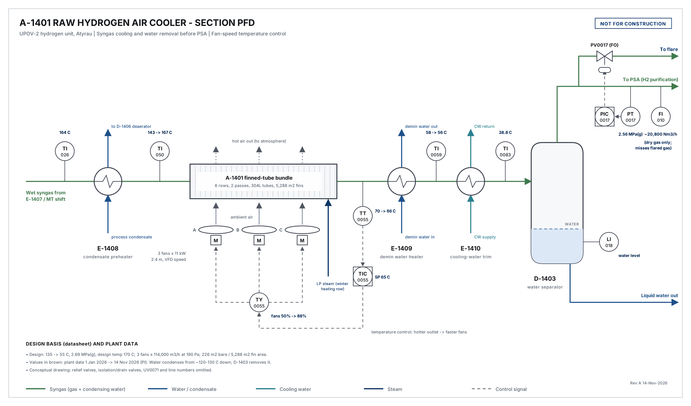
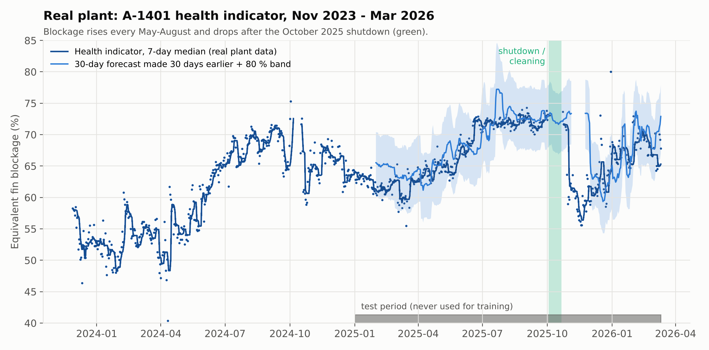
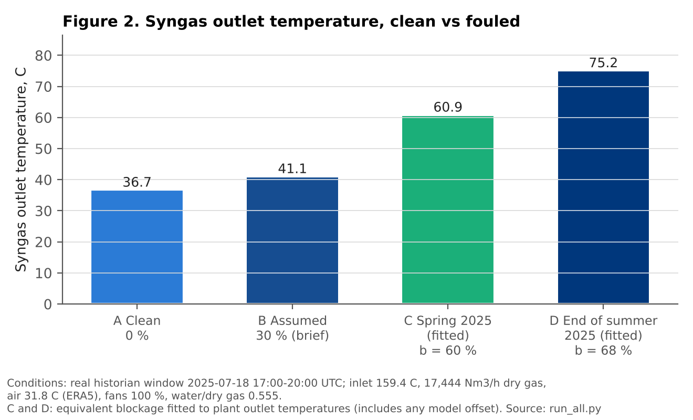
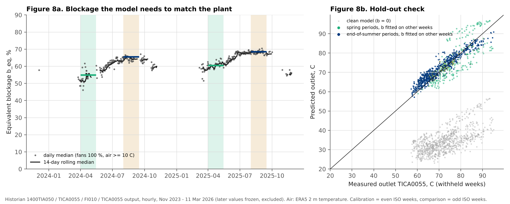
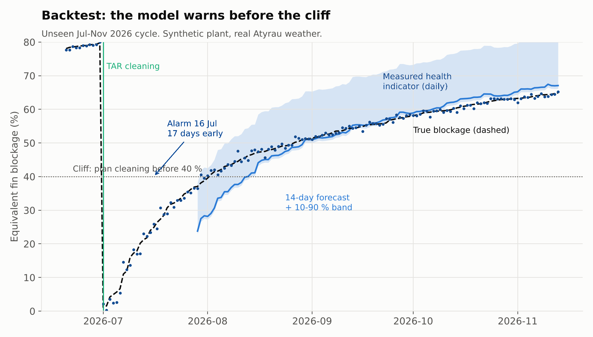
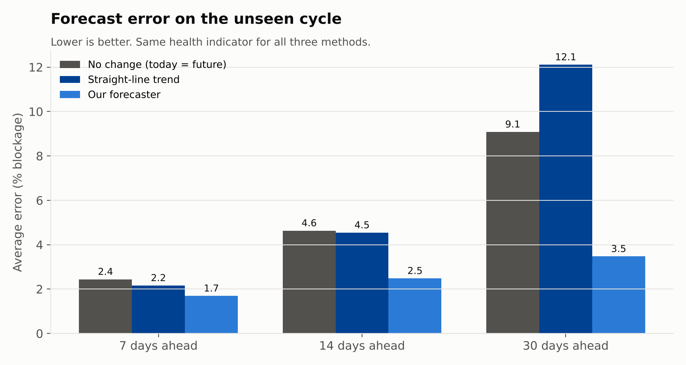
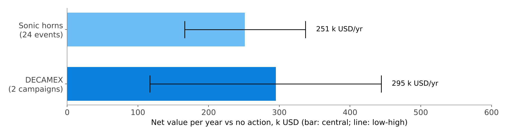

Why A-1401 loses cooling every summer, and how to keep it clean
By Perovskite team
A-1401 cools wet syngas before hydrogen purification. When its fins clog, the plant must run less gas.

6 rows of finned tubes, 3 fans push outside air up through 2 mm fin gaps
is condensing water vapour, not cooling gas (clean model, hot day)
above it the separator and PSA suffer, so operators cut gas flow
Debris builds up every summer and only the top layer is ever cleaned off

of blockage added every May–August
never removed by cleaning: old debris, louvres or fin damage. This is why nobody gets back to a clean bundle.
upper estimate of hydrogen not produced in warm weather; fans at 100 % for 3,350–3,640 h a year
Our 3D model: drag to rotate, switch to the close-up, move the debris slider
Air from below
3 fans × 2.4 m push air up through 6 rows of tubes
2 mm fin gaps
fluff wedges into the underside of the bottom row first
Slider = blockage
watch airflow fall and the gas outlet rise
Air-side coefficient and fin efficiency, clean bundle on a hot day
UAair at end of summer (b = 0.685): h rises to 61 W/m²K in the open gaps, but only 1,666 m² of fin still sees air
Fan curve meets system curve: 30 % blocked gaps give only 17 % less air
| b | Air, % rated | Fan Δp, Pa | Power/fan |
|---|---|---|---|
| 0 (clean) | 100 | 190 | 9.3 kW |
| 0.30 (case input) | 83 | 226 | 9.1 kW |
| 0.605 (spring 2025) | 54 | 270 | 7.2 kW |
| 0.685 (end of summer) | 45 | 281 | 6.1 kW |
Air mass and energy balance: the heat the gas loses is the heat the air gains
Fouling lifts the outlet from 37 °C to 75 °C, and the model predicts weeks it never saw


A monitor that warns weeks before the outlet hits the limit, built on the same model


Both cut the hot hours. DECAMEX recovers more, costs nothing up front and can start sooner
| No action (2025) | 1 · Sonic horns + vacuum hood | 2 · DECAMEX dry cleaning | |
|---|---|---|---|
| How it works | — | sound waves shake fluff loose, hood vacuums it; 24 short events May–Sep | dry powder blown through the fins by lance; 2 campaigns (1 Jun, 1 Jul) |
| Outlet on the hot day (range) | 75.2 °C | 67.1 °C (62.4–72.5) | 63.2 °C (60.1–69.6) |
| Duty recovered · gas capacity | — | +166 kW · +10 % | +242 kW · +16 % |
| Hours above 65 °C, season 2025 | 2,651 | 1,921 | 1,605 |
| Extra H₂ per season (upper) | — | 178 t | 240 t |
| CAPEX · OPEX per year | — | 90 k · 15 k USD | 0 · 64 k USD |
| Net value per year · payback | — | 251 k USD · 4 months | 295 k USD · no investment |
| Lead time | — | 8–12 weeks | 4–8 weeks |
| Plant stays online? | — | yes, one fan off 20 min per sector | yes, one fan off 1.6 h per sector |
Both solutions pay back within one season. DECAMEX needs no investment at all.

no CAPEX; 2 campaigns ≈ 64 k USD a year; bookable in 4–8 weeks
90 k USD CAPEX, 251 k USD net a year (13 months in the pessimistic case)
| Item (team estimate) | Cost, k USD | Lead time |
|---|---|---|
| Sonic horns ×3 + hood, CAPEX | 50–150 | 8–12 wk |
| Horns OPEX incl. fan-off loss | 12–18 / yr | — |
| DECAMEX online campaign | 15–60 each | 4–8 wk |
| Monitor (existing PI tags) | 5–20 | 2–4 wk |
Every option has a side effect. We quantified them and designed around them
148 dB at the horn
hearing-protection zone during 10 s bursts; run at night, remote
1 fan off ≈ 24 h / year
20 min per sector × 3 × 24 events
Coating cure 200 °C > 170 °C design
so coating stays optional, only with OEM approval
1 fan off: +30 K outlet
for 1.6 h per sector, ≈ 9.6 h / year: use a cool night window or trim load
Powder on aluminium fins
SDS and fin compatibility to confirm with CTP; test on a 0.5 m² patch first
Static from powder flow
earth the lance; H₂ Ex zone
Chloride cracking of 304L
at ≥ 10 ppm Cl where water evaporates; tubes run 60–160 °C
H₂ unit: Ex zone
pneumatic horns and lances; Ex-rated hood fan
Fluff is flammable
collect it, never blow it onto hot surfaces. LOTO per fan, work at height
The decision matrix recommends DECAMEX as the main solution, with horns as the next step after a pilot
| Option | Cooling 30 % | Economics 25 % | Safety 15 % | Certainty 15 % | Feasibility 15 % | Score | After a successful pilot |
|---|---|---|---|---|---|---|---|
| No action (2025) | 1.0 | 1.0 | — | — | — | — | — |
| 1 · Sonic horns + vacuum hood | 2.8 | 2.7 | 3 | 2 | 3 | 2.71 | 2.86 |
| 2 · DECAMEX dry cleaning | 3.6 | 3.0 | 4 | 3 | 4 | 3.47 | 3.62 |
Cooling: hours above 65 °C on a 1–5 scale, where 1 = no action (2,651 h) and 5 = no seasonal debris at all (1,032 h). Economics: net value per year, 1 = 0 and 5 = 600 k USD. Safety, certainty and feasibility are team judgement: horns lose points for 148 dB, more fan stops, an 8–12 week order and no test on poplar fluff. Neither is proven on poplar fluff, so both gain a point after a pilot.
Monitor all year, clean with DECAMEX before the peak, and pilot the horns
2 campaigns (1 Jun, 1 Jul) or on alarm: 4–8 weeks lead time, no investment
the 50–60 % that no cleaning removes: debris, louvres or damaged fins
pins down water content, our largest model uncertainty
0.5 m² patch on real fluff; vendor prices to replace our estimates
All data, code and full calculations are in the repository
| Folder | What it holds |
|---|---|
| docs/calculations.pdf | all hand calculations with justification |
| a1401_clean_vs_fouled/ | rating model, tests, results, figures |
| a1401_solutions_check/ | solution simulation, matrix, protocols |
| a1401_monitor/ | monitor, backtests, dashboards |
| plant_history/ · weather/ | hourly plant data, ERA5 weather |
| a1401_hybrid/ | economics and decision matrix |
| a1401-3d/ | interactive 3D model of the cooler |
| Technical accuracy & fundamentals (25 %) | 5–8 |
| Problem & impact analysis (20 %) | 2–4, 8 |
| Monitoring model + backtest (20 %) | 9 |
| Practicality & innovation (20 %) | 10, 12–14 |
| Economics & lead time (15 %) | 10–11 |
Terms in plain words
Duty (Q) heat removed per second, kW
UA heat moved per degree of temperature difference, kW/K
h (film coefficient) how easily heat passes between a surface and the fluid, W/m²K
Fin efficiency ηf how well a fin works compared with one at root temperature
Equivalent blockage b share of air gaps the model closes to match the measured outlet
Fan / system curve pressure the fan gives vs pressure the bundle needs; airflow is where they cross
Sensible / latent heat heat that changes temperature / heat released when vapour condenses
Reynolds, Nusselt, Prandtl dimensionless flow, heat-transfer and fluid-property numbers
Forced draft fans below the bundle push air up through it
Hold-out test checking a model on data it was not fitted to
Chloride SCC cracking of stainless steel by chloride under stress at high temperature
LOTO · Ex zone lock-out/tag-out of machines · area with explosive-gas risk
Nm³ gas volume at 0 °C and 1 atm
CAPEX / OPEX one-time cost / yearly running cost